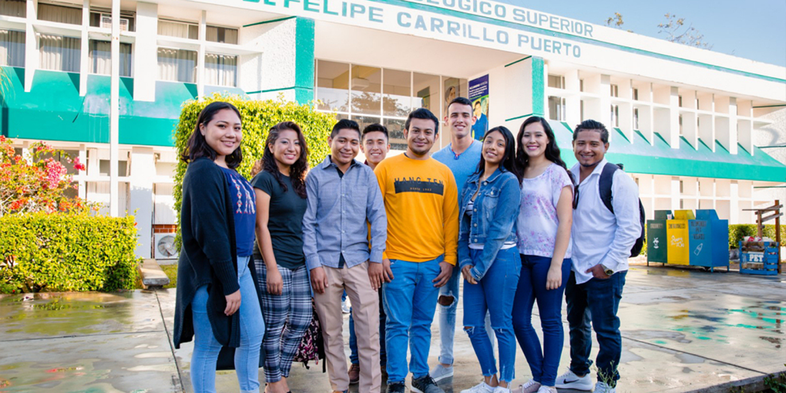

Decreto ITSFCP

Conforme al Plan Nacional de Desarrollo 1995-2000 y sus programas sectoriales y subsectoriales de educación; el Plan de Desarrollo Estatal 1993-1999 y, como producto de la corresponsabilidad entre el Gobierno y la Sociedad, surge en el año de 1997 en el corazón del Estado de Quintana Roo la iniciativa por impulsar el desarrollo educativo que se requería en la región, como centro del mismo estado en atención a una creciente demanda de oportunidades educativas y económicas.
Conjuntamente con lo anterior, se tiene especial interés en la formación educativa para las actividades profesionales, atendiendo a las condiciones de producción de la región y buscando oportunidades para evitar el desplazamiento de estudiantes hacia la capital del estado o a otros puntos del país, en menoscabo de las posibilidades de desarrollo e industrialización de sus lugares de origen como producto de estos factores, se gestan en el municipio de Felipe Carrillo Puerto, las condiciones para que se creara oficialmente el 2 de Septiembre de 1997; bajo el decreto publicado en el Periódico Oficial del Estado del 7 de Noviembre del mismo año, el Instituto Tecnológico Superior de Felipe Carrillo Puerto (ITSFCP) como "Un organismo público descentralizado de carácter estatal con personalidad jurídica y patrimonio propios, que tendrá por objeto impartir e impulsar la educación superior tecnológica, así como realizar la investigación científica y tecnológica de la entidad, que contribuya a elevar la calidad académica, vinculándola con las necesidades de desarrollo estatal, regional, nacional y teniendo como su órgano máximo de Gobierno a una Junta Directiva".
Antecedente

Un antecedente de suma importancia, es mencionar la fecha 15 de Octubre de 1997, cuando se firma el convenio de Coordinación entre la Secretaría de Educación Pública y el Gobierno del Estado de Quintana Roo, el cual da sustento a la fundación, políticas, lineamientos y normas, que se establecen para el funcionamiento académico, administrativo y financiero del tecnológico.
Inicio de Actividades

Con el inicio de sus actividades administrativas el 15 de agosto de 1997, durante los siguientes quince años, el ITSFCP ha brindado sus servicios educativos ininterrumpidamente a jóvenes primordialmente de escasos recursos y en su mayoría provenientes de comunidades mayas, abarcando los Municipios de Felipe Carrillo Puerto y José María Morelos, el norte del municipio de Othón P. Blanco, así como la parte sur de los municipios de Solidaridad y Lázaro Cárdenas; e incluso de municipios colindantes del estado de Yucatán.
La plantilla laboral del Instituto para el primer ciclo escolar, 1997-1998, estuvo conformada de 9 docentes, 2 directivos, 7 mandos medios, 2 secretarias y una persona del área de servicios generales, siendo un total de 21 personas.
Inauguración

Durante esta primera etapa las actividades educativas se desarrollaron provisionalmente en las instalaciones del edificio subsede de la Universidad Pedagógica Nacional en la ciudad de Felipe Carrillo Puerto, trasladándose posteriormente en 1999 a sus propias instalaciones ubicadas en el kilómetro 1.5 de la carretera Felipe Carrillo Puerto - Vigía Chico; siendo inauguradas por el entonces Presidente Constitucional de la República Mexicana Dr. Ernesto Zedillo Ponce de León.
Fechas Relevantes

Durante sus años de existencia el ITSFCP ha conseguido importantes logros tanto de índole académica como de impacto en la comunidad contribuyendo decididamente a mejorar las condiciones sociales imperantes en la región y proyectando al municipio de Felipe Carrillo Puerto tanto a nivel estatal como nacional.